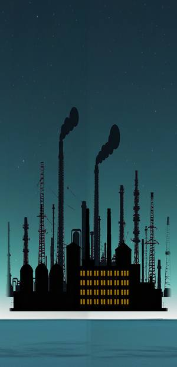
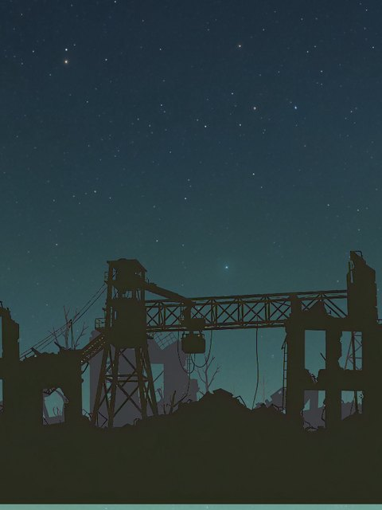
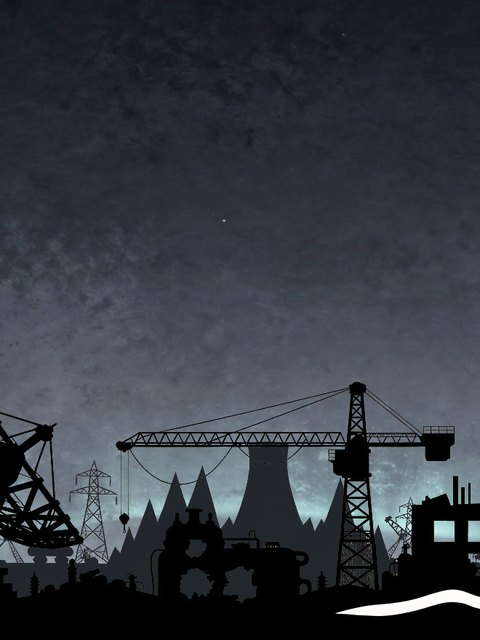
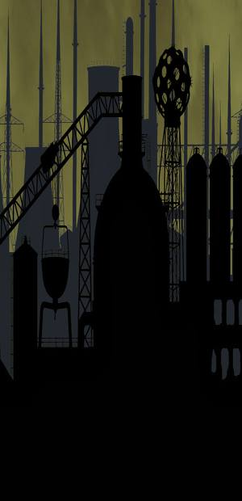
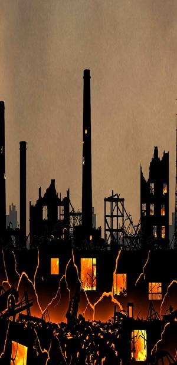
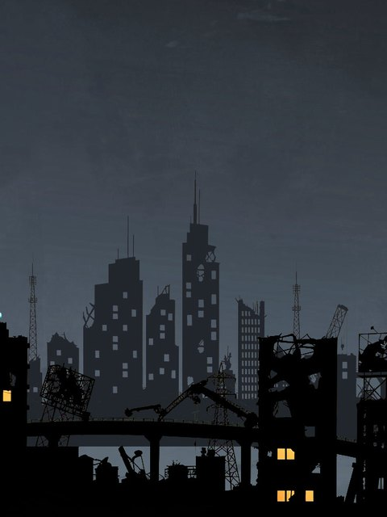
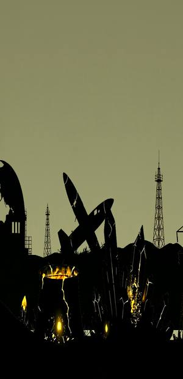
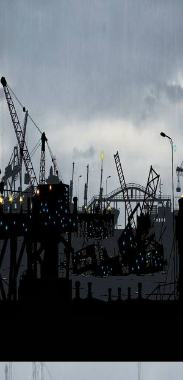
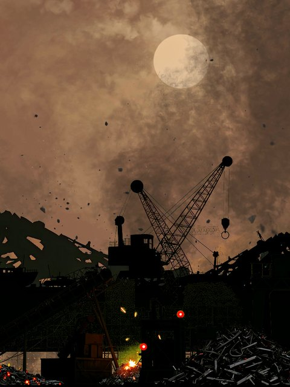
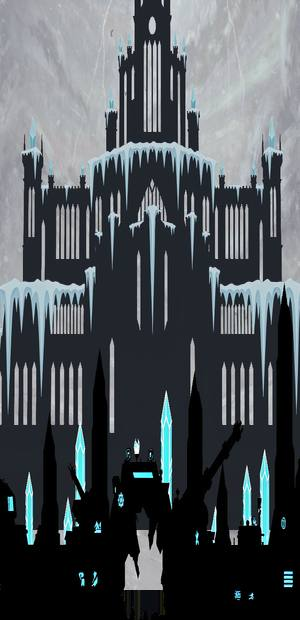

The Last War
Nobody won the war. The stop order never came: the headquarters that could have issued it were the first to vanish. The machines remained — and machines keep a schedule.
Automated factories still roll interceptors off the line. The climate weapon was never switched off. The sky belongs to the machines — which is why everything that wants to live hugs the ground.
One armored train remains. A reactor, anti-air platforms, a harvest field — and rails that still remember where to go. As long as the train holds the line, the route exists.
Downed machines drop crystals — condensate of their fuel. The harvest field catches them before they touch the ground, the reactor feeds, and the SYSTEM RESTORE circuit wakes the sleeping systems: armor, guns, the field. That is how the war feeds the one who fights it.
The route: 10 sectors

The approaches. Snow muffles everything but the engines. The first interceptors hit the embankment still hot. The system marked the sector green. The system is an optimist.

The forest died standing — but never disarmed. Spore forms hold the ground, leeches cling to the harvest field. Standing order: touch nothing with bare hands. There have been no bare hands aboard for years.

Below zero. The climate weapon performed as designed — and never stopped. Frost eats the turrets faster than the enemy does: reheat, reheat, reheat. We cleared the pass on three barrels out of six.

Acid discharges on a schedule that doesn't exist. Leeches choke the harvest from the second wave. Old maps call this sector the garden ring. The garden blooms — in yellow.

The ashfield breathes. Thermals lift the bombers above our flak ceiling; artillery talks from beyond the horizon. This is where the drills end and the exam begins. Log entry: hold formation.

A city of a million windows. Population: shields. Ordinary fire dies on the screens — you need a caliber that asks twice. The necropolis has its Warden. We broke through. Not on the first try.

Radiation critical. Everything you shoot down splits in two — and both halves are angrier. The scrap glows and stands back up. After the Megalopolis this is almost a vacation. Almost.

The water came and never left. Pressure hulls soak up the bursts; surf wraiths break the line of fire in dashes. You can't see the rails. The train knows them by heart.

This is where the war stacked its dead. Now the scrap reactivates: swarms come in clusters, contact damage peaks for the whole route. If machines have a hell, it is overcrowded and still taking applications.

The last line. A full cold-weather garrison, the old war's elite, the Final Spire on the horizon. There is nothing beyond the citadel — which is why the route begins again.